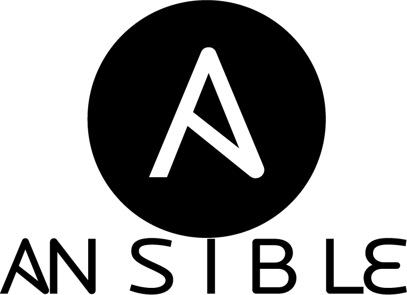

2.  Meetup
The Fun and Pain with Ansible
Hamburg, 19.02.2015
Luka Dornhecker, Darius Murawski
Topics:
- Who we are
- The Pain with Puppet
- Infrastructure
- Software
- The Fun (why we use it)
- Best Practice
- Vagrant
- The Pain (with Ansible)
Darius Murawski
Luka Dornhecker
The Pain with Puppet
- Execution Order
- DevOps write the stuff
- Production Server
- Change from monolith software to APIs
The Fun (why we use it)
- We love yml files (rails!)
- Requires only sshd and Python
- Fast, Clear Execution Order
- Modules for psql, rabbitmq and more
Best Practice - project structure
- Every rails app own playbook file
- Every external application own roles file
- same path on every environment
Best Practice - key management
- Key Repository
- CI get triggered by changes and publish all keys
- Keys as git submodule in your ansible repository
Best Practice - Release Management
- Test from blank!
- Test by diff!
Best Practice - Work with DevOps
- Huge task to transfer puppet to ansible scripts
- Show them how both can benefit (Continous Delivery)
- Use .env files for configuration
Vagrant
- Testing ansible stuff
- Clean state of development VM?!
- Performance ?
- System Ruby :-(
The Pain (with Ansible)
- Keep servers in sync
- QA the stuff! (CI integration?)
Pictures:
- http://upload.wikimedia.org/wikipedia/commons/7/73/Ruby_logo.svg
- http://rubyonrails.org/images/rails.png
- http://de.wikipedia.org/wiki/PostgreSQL#mediaviewer/File:Postgresql.svg
- https://pbs.twimg.com/profile_images/631946075/realistic.png
- http://sametmax.com/wp-content/uploads/2012/07/banner_redis-300dpi-0315a8013afee137cce47b474541d7f1.png
- http://nginx.org/nginx.png
- http://www.rabbitmq.com/img/rabbitmq_logo_strap.png
- http://en.wikipedia.org/wiki/Monit#mediaviewer/File:Tildeslash_Monit_Logo.gif